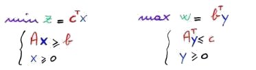
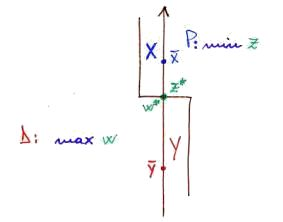
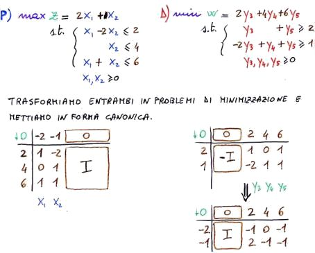
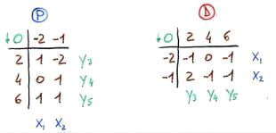

Torna alla pagina di Ricerca Operativa
:: Ricerca Operativa - Dualità ::
Tutte le immagini di questa pagina sono prese dalle slide del prof Giovanni Righini
Dualità
Ogni problema di programmazione lineare ammette un corrispondente problema lineare detto duale. Chiamiamo il primo primale (P) e il secondo duale (D).
Dato un problema in forma alle disuguaglianze, vediamo le corrispondenze con il suo duale:
| Primale
| Duale
|
| minimizzazione
| massimizzazione
|
| m vincoli
| m variabili
|
| n variabili
| n vincoli
|
| coefficienti funzione obiettivo
| termini noti
|
| termini noti
| coefficienti funzione obiettivo
|
| matrice A
| matrice AT
|
| vincoli di uguaglianza
| variabili libere
|
| variabili libere
| vincoli di uguaglianza
|
| vincoli di disuguaglianza
| variabili non negative
|
| variabili non negative
| vincoli di disuguaglianza
|
| prezzi ombra dei vincoli
| valori ottimi delle variabili corrispondenti
|
Vedi esempio:

In particolare il duale del duale di P è P stesso.
Teoremi della dualità
A cosa serve aver definito cos'è il duale di un problema di programmazione lineare? A sfruttare alcune sue proprietà espresse da una serie di teoremi, il primo dei quali è il teorema della dualità in forma debole.
Il teorema dice che dati due problemi duali:
P: min z(x), con x che appartiene a X
D: max w(y), con y che appartiene a Y
per ogni soluzione ammissibile x' che appartiene a X di P e per ogni soluzione ammissibile y' che appartiene a Y di D, si ha che:
z(x') >= w(y')
Il primo corollario dice che se:
- x' appartiene a X
- y' appartiene a Y'
- z(x') = w(y')
allora ho trovato la soluzione ottima!
Il secondo corollario dice che se un problema lineare P è illimitato, allora il suo duale D è inammissibile. Se infatti P ha valori che arrivano a meno infinito per z(x'), non può esistere nessun valore y' per rendere w(y') minore di lui.
Non è altrettanto scontato il contrario: se P è inammissibile, anche il suo D potrebbe benissimo esserlo.
Riassumendo, con il teorema della dualità in forma debole ci viene detto che i valori della funzione obiettivo che sto minimizzando sono sempre al di sopra di quelli della funzione che sto massimizzando.
Il teorema della dualità in forma forte ci dice invece che dati due problemi lineari duali P e D, se uno dei due ammette una soluzione ottima finita, allora anche l'altro la ammette e i due valori coincidono. Guardando la figura seguente potremo dire che i due valori si sono incontrati a metà:

Arriviamo infine al teorema fondamentale della dualità, che ci dice che data una coppia di problemi lineari duali P e D, esiste una sequenza finita di passi di pivot (quindi dell'algoritmo del simplesso) che termina al verificarsi di uno di questi quattro casi:
- soluzione ottima di P e D (finita e coincidente)
- P è illimitato e D è inammissibile
- D è illimitato e P è inammissibile
- P e D sono entrambi inammissibili
C'è un ultimo teorema chiamato teorema dello scarto complementare, che dice che la condizione necessaria e sufficiente per l'ottimalità di x' appartenente a X e di y' appartenente a Y è:
| y'T (A * x' - b) = 0
| dove (A * x' - b) è la variabile di slack
|
| (c - y'T * A) x' = 0
| dove (c - y'T * A) è la variabile di surplus
|
In altre parole il prodotto della variabile di un problema P per la variabile di slack del corrispondente vincolo nel problema duale è nullo in tutte le soluzioni di base.
Perché ciò sia vero devono essere verificate entrambe le soluzioni. Notare che questo teorema si applica solo alle variabili non negative, per il semplice motivo che quelle libere non hanno variabili di slack corrispondenti nel duale.
Adesso mettiamo alla prova tutti questi teoremi da un punto di vista algoritmico. Dato che i coefficienti di P e D sono sempre gli stessi (ma trasposti), entrambi i problemi si possono rappresentare e riconoscere nello stesso tableau. Mettiamo alla prova questa affermazione considerando il seguente esempio, preso sempre dalle slide di Righini:

Questa proprietà è ancora più evidente nel tableau ristretto, ovvero privato della matrice identità e costi ridotti corrispondenti:

Che ce ne facciamo di questa proprietà? Ne possiamo ricavare qualche vantaggio? Certo, perché abbiamo dimostrato che è possibile eseguire sul tableau del primale gli stessi passi di pivot che l'algoritmo del simplesso eseguirebbe su quello del duale. Questa estensione dell'algoritmo prende intuitivamente il nome di algoritmo del simplesso duale, che ha come caratteristica quella di conservare l'ottimalità della soluzione fino a raggiungere l'ammissibilità. Le regole di scelta del pivot sono ovvviamente duali rispetto all'algoritmo convenzionale, quindi:
- il pivot deve essere negativo
- bisogna scegliere la riga col termine noto più negativo
- bisogna scegliere la colonna che minimizza il rapporto tra il coefficiente di costo ridotto e il pivot
Quando diventa utile utilizzare l'algoritmo del simplesso duale? Fondamentalmente in due casi:
- quando P ha molti vincoli e poche variabili naturali. In generale è sempre meglio trovarsi nella situazione inversa, perché il tempo di calcolo dell'algoritmo del simplesso è maggiormente influenzato dal numero di vincoli che da quello delle variabili. Buttiamola sul pratico: ho un problema con 2 variabili e 100 vincoli, che nel caso peggiore risolvo con 100 passaggi di pivot. Passiamo al duale: ho 100 variabili e 2 vincoli, che nel caso peggiore richiede due passi di pivot per trovare l'ottimo
- quando la soluzione di base iniziale non è ammissibile per il primale. In questo caso infatti l'algoritmo del simplesso duale può sostituire la fase di inizializzazione, a patto però che la soluzione iniziale sia ammissibile per D
Torna alla pagina di Ricerca Operativa